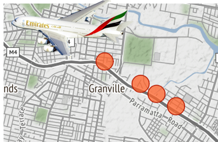

Using KSQL, Apache Kafka, a Raspberry Pi and a software defined radio to find the plane that wakes Snowy the cat
Posted

Using KSQL, Apache Kafka, a Raspberry Pi and a software defined radio to find the plane that wakes Snowy the cat
Using open-source streaming solutions to map the correlation between aircraft traffic and cat behaviour
Aircraft determine their position using GPS; and periodically transmit that position along with identity string, altitude, speed etc as ADS-B signals.
Cats behave erratically, but generally display their displeasure by jumping on your face. The post describes how we can use open source streaming solutions (Apache Kafka), KSQL (streaming SQL engine) and a Raspberry Pi to process aircraft movements in real-time to determine which plane is upsetting my cat.
Overview
 Planes to graphs using Kafka & KSQL
Planes to graphs using Kafka & KSQL
I built a receiver to listen to aircraft transponder messages (ADS-B signals) as the planes fly overhead. These aircraft transmissions are not coordinated — the messages appear as a jumble of interwoven transmissions. Specifically I wanted to capture the location and callsign transmissions.
But unravelling these mixed streams is complex — it’s like trying to understand a conversation when everyone’s talking at the same time at a party. I decided to use a combination of Kafka and KSQL to find the plane that freaks out my cat.
ADS-B capture using a Raspberry Pi
To capture the aircraft transmissions I used a Raspberry Pi and a RTL2832U — a USB dongle originally sold to watch digital TV on a computer. On the Pi I installed *Dump1090 *— a program which accesses ADS-B data via the RTL2832U and a small antennae
Raspberry Pi and a RTL2832U as a software defined radio (SDR)
ADS-B signals to Kafka Topics
Now I’ve got a stream of raw ADS-B signals we need to have a look at the traffic. Kafka is a pretty awesome stream processing platform. I started by separating the incoming ADS-B signals into two kafka topics, location-topic (aircraft code with height and location) and callsign-topic (aircraft code and callsign).
I wanted to understand what the planes were and what routes they were flying. Luckily I found a database of airframes (eg, ICAO code ‘7C6DB8’ is a Boeing 737). This mapping I loaded into the icao-to-aircraft topic.
KSQL provides a “SQL engine” that enables real-time data processing against Apache Kafka topics. That means we can query our aircraft topic like this
create stream icao_to_aircraft_stream
with (KAFKA_TOPIC='icao-to-aircraft', VALUE_FORMAT='AVRO');
select manufacturer, aircraft, registration
from icao_to_aircraft_stream
where icao = '7C6DB8';
Boeing | B738 | VH-VYI
Similarly, into the callsign-details topic I loaded callsign details (eg, ‘QFA563’ is a Qantas flight from Brisbane to Sydney).
create stream callsign_details_stream
with (KAFKA_TOPIC='callsign-details', VALUE_FORMAT='AVRO');
select operatorname, fromairport, toairport
from callsign_details_stream
where callsign = 'QFA563';
Qantas | Brisbane | Sydney
Let’s have a peek at the “location-topic” stream. You can see a steady stream of incoming messages reporting location updates from passing aircraft.
kafka-avro-console-consumer --bootstrap-server localhost:9092 --property --topic location-topic
{"ico":"7C6DB8","height":"6250","location":"-33.807724,151.091495"}
The equivalent KSQL syntax is
select timestamptostring(rowtime, 'yyyy-MM-dd HH:mm:ss')
, ico
, height
, location
from location_stream
where ico = '7C6DB8';
2018-05-19 07:13:33 | 7C6DB8 | 6250.0 | -33.807724,151.091495
KSQL — Crossing the streams …
The real power of KSQL comes from combining the incoming stream of location data against the static details topics (see 03_ksql.sq). That is, adding useful details to the raw data stream. This is very similar to a “left join” in database language. In fact, the syntax for KSQL is indeed a left join…
create stream location_and_details_stream as
select l.ico
, l.height
, l.location
, t.aircraft
from location_stream l
left join icao_to_aircraft t on l.ico = t.icao;
And a KSQL query the stream like this
select timestamptostring(rowtime, 'yy-MM-dd HH:mm:ss')
, manufacturer
, aircraft
, registration
, height
, location
from location_and_details_stream;
18-05-27 09:53:28 | Boeing | B738 | VH-YIA | 7225 | -33.821,151.052
18-05-27 09:53:31 | Boeing | B738 | VH-YIA | 7375 | -33.819,151.049
18-05-27 09:53:32 | Boeing | B738 | VH-YIA | 7425 | -33.818,151.048
Equally, we can combine the incoming callsign identity stream against the static callsign_details topic
create stream ident_callsign_stream as
select i.ico
, c.operatorname
, c.callsign
, c.fromairport
, c.toairport
from ident_stream i
left join callsign_details c on i.indentification = c.callsign;
select timestamptostring(rowtime, 'yy-MM-dd HH:mm:ss') \
, operatorname \
, callsign \
, fromairport \
, toairport \
from ident_callsign_stream ;
18-05-27 13:33:19 | Qantas | QFA926 | Sydney | Cairns
18-05-27 13:44:11 | China Eastern | CES777 | Kunming | Sydney
18-05-27 14:00:54 | Air New Zealand | ANZ110 | Sydney | Auckland
Now we have a constantly updating topic with flight details — we can make some pretty dashboards. I used Kafka Connect to pump Kafka topics into Elastic Kibana (full scripts).
Kibana Dashboard
Here’s a sample of dashboards displaying aircraft location on a map. In addition a bar-chart of manufactures, an altitude line plot and a destination word-cloud.
 Kibana Display
Kibana Display
Findings & Conclusion
As best as I can remember, today my cat woke me at a little past 6am. I can use KSQL to find a low flying aircraft (below 3500ft) around this time …
select timestamptostring(rowtime, 'yyyy-MM-dd HH:mm:ss')
, manufacturer
, aircraft
, registration
, height
from location_and_details_stream
where height < 3500
and rowtime > stringtotimestamp('18-05-27 06:10', 'yy-MM-dd HH:mm') and rowtime < stringtotimestamp('18-05-27 06:20', 'yy-MM-dd HH:mm');
2018-05-27 06:15:39 | Airbus | A388 | A6-EOD | 2100.0
2018-05-27 06:15:58 | Airbus | A388 | A6-EOD | 3050.0
Terrific, I can locate a craft over my house at 6:15 am. It’s a A380 (which is a huge plane) on a flight to Dubai that’s waking my cat. I can confirm this by reviewing the same time period in Kibana which shows a flight path directly over my house.
Kibana map between 6:10 and 6:20
Ready to try it?
Got a similar pet problem; or just curious how Kafka and KSQL work together? You can find a combined docker setup, helper images, KSQL and Elastic setup at:-